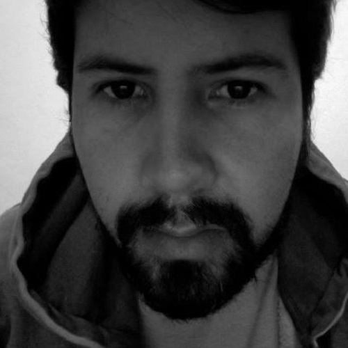

Mentores del Hackathon

Gerardo Chairez
Dr. en Tics. Dentro de su trayectoria profesional resaltan marcas como Adobe, Lego, Pedigree, Dove, Milky Way, MVS y Snickers, entre otras. Además de pertenecer al departamento C4 de Tecnología en el proyecto Internacionar Saludo Mesoamérica 2015; financiado por Billa Gates, Carlos Slim y el Banco Interamericano de Desarrollo(BID). Incursionó en animación y Visual Effects (VFX) para cine i TV participando en peliculas nacionales y una serie europea. Actualmente es miembro de Leitmotiv Media Studio en Querétaro y Director General de Beahero Animation Studio en Zacatecas. En Noviembre del 2016 concluyó su capacitación en Querétaro con Enrique Navarrete, animador de Shrek Dreamworks, donde también participó, como parte de los ponentes, Manny Rodriguez animador de Pixar.
Luis Daniel Beltrán
Desde muy temprana edad y de manera autodidacta se introdujo en el mundo de la tecnología llevándolo con los años a ser uno de los primeros usuarios de Internet en México. En la Universidad Anáhuac cursó la Licenciatura en Informática. En la actualidad se especializa en montar y administrar infraestructura de seguridad para aplicaciones y sitios web de alto tráfico. A pesar de tener una formación altamente tecnológica es un apasionado de la naturaleza. Esto lo llevó a construir su propia casa 100% sustentable basada en una técnica innovadora y ecológica. Desde el año 2012 dedica parte de su tiempo libre al estudio de las criptomonedas. En este momento lidera un proyecto (pesodigital.org) para llevar la Cadena de Bloques como un instrumento legal en el País.
Martha Mena
Ingeniera en Electrónica e ingeniera en computación con Maestría en Ingeniería de Software. Certificada en Java Associated, Developer y Web Components, así como en bases de datos por parte de Oracle y en el lenguaje de programación Python. En el 2015 ganó el 3er lugar de la convocatoria del Emprendimiento en CIMAT a nivel nacional. Actualmente cuenta con una patente en tramite relacionada con procesamiento de imágenes y estimación de medidas con móviles. Desde hace cinco años maneja con dos socios la empresa de desarrollo de tecnología Octet++ que actualmente cuenta con tres versiones de medidores de humedad y temperatura del suelo agrícola a diferentes profundidad, controlados por dispositivos móviles con sistema operativo iOS y Android mediante Bluetooth LE.
Paul Rojas
Mentor de Mercadotecnia Licenciatura en Mercadotecnia en Universidad Autónoma de Durango (Campus Durango) Maestría en Publicidad en Universidad de La Salle Bajío Maestría en Neuromarketing e Investigación de Mercados OBS/Universidad de Barcelona (Por iniciar)Consultor Independiente en área de Marketing desde 2005 Catedrático en distintas Universidades en las áreas de Marketing, Investigación de Mercados, Publicidad y Emprendimiento Consultor del Centro de Innovación e Incubación Empresarial del ITSF (2009-2014) Asesor del comité de Mercadotecnia del Cluster turístico del Estado de Zacatecas Asesor del Proyecto Emprende Ya, Zacatecas y Reto Emprende en el Consejo estatal de Desarrollo Económico del Estado. Gerente de Ventas y marketing de la empresa Productos Alimenticios Regias (2013-2015) CEO- Fundador y Director de agencia Meteora Marketing Studio
Perla Velasco
Es Doctora en Ciencias de la Computación por la “University of Manchester”, Reino Unido. Fue investigadora postdoctoral en el “Institute for Software Research” de “Carnegie Mellon University”, Estados Unidos. En estas instituciones se especializó en los tema de Arquitectura de Software. Actualmente es Subsecretaria de Planeación y Apoyos a la educación en el Estado de Zacatecas, es profesor en la Universidad Autónoma de Zacatecas en el programa académico de Ingeniería de Software. Perla ha brindado consultoría en diseño de arquitectura de software a empresas México y el extranjero. Fundó la Escuela de Verano en Ingeniería de Software que lleva a la fecha tres ediciones exitosas desde el 2012. Es coautora del primer libro de arquitectura de software en español, salido este año a la en el 2015. Perla es también chef, fotógrafa y corredora amateur.
Sodel Vázquez
Es profesor-investigador del programa de Ingeniería de Software en la Unidad Académica de Ingeniería Eléctrica (UAIE) de la Universidad Autónoma de Zacatecas, realizando actividades de investigación y desarrollo tecnológico en temas como Minería de Texto e Ingeniería de Software. Cuenta con perfil PROMEP, líder del Cuerpo Académico “UAZ-CA-192 Tecnologías de la Información” y Responsable del Programa de Ingeniería de Software.Además es evaluador del Consejo para la Acreditación de la Educación Superior (CACEI), integrante del Consejo Técnico del Examen General para el Egreso de la Licenciatura en Ingeniería de Software (EGEL-ISOFT) en su carácter de representante de la Universidad Autónoma de Zacatecas y miembro del Registro CONACYT de Evaluadores Acreditados (RCEA). Sodel obtuvo el grado de Doctor en Ciencias Computacionales por la Universidad de Manchester, Reino Unido y el grado de Maestría en Ciencias Computacionales por el Instituto Nacional de Astrofísica Óptica y Electrónica.Obten tu entrada ahora
Por tiempo limitado
Obtener entrada